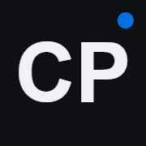
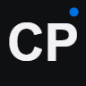
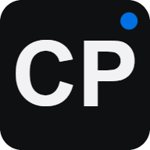
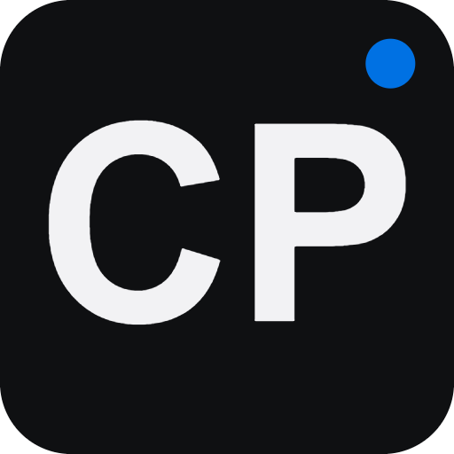
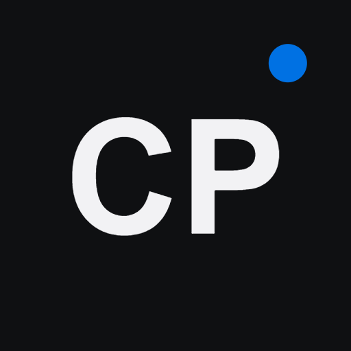
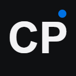
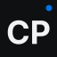
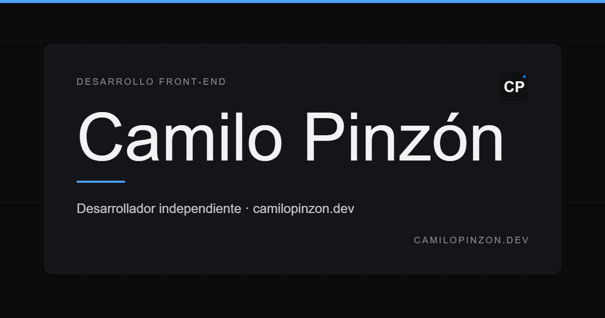
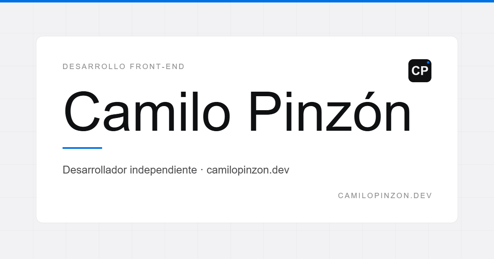
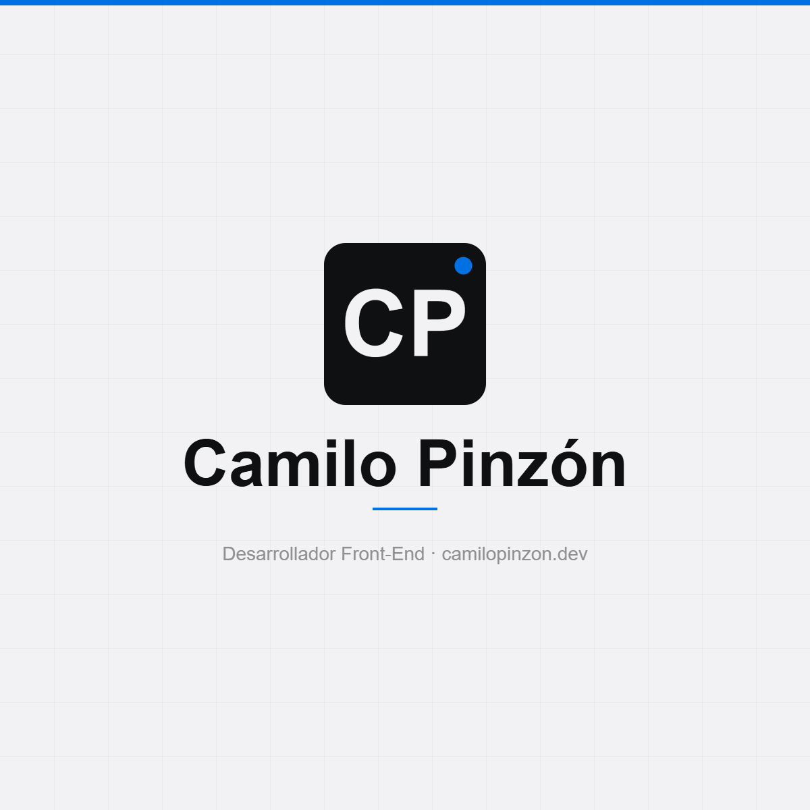

Brand mark — in context
The same CP monogram across the contexts that consume each size. Tab favicon, iOS home screen, search results.

Camilo PinzónCamilo Pinzón — Diseño & Producto
Estudio independiente de diseño y producto. Portafolio, casos de estudio y notas sobre dirección de arte e interfaces.
Favicons — every size renders cleanly
Same mark drawn fresh at each pixel size: heavier weights for 16/32 to survive sub-pixel rendering, the accent dot disabled at < 48 px where it would just look like noise.

App icons — iOS, Android, Windows
iOS overlays a rounded mask automatically; Android adaptive icons use a separate "maskable" variant with a 26 % safe-area.





Open Graph & Twitter — 1200 × 630
A single, calm composition: hairline accent at the top, big restrained wordmark, blue under-rule, tagline and URL. The dark variant uses the dark-mode palette for sharers on dark UIs.




Format choice — what to use where
How to wire it up
Copy the block in head-snippet.html into your site's <head>. Replace https://www.camilopinzon.dev with your absolute origin so social crawlers can fetch the OG image.
<link rel="icon" type="image/svg+xml" href="/assets/social/favicon.svg" />
<link rel="icon" type="image/png" sizes="32x32" href="/assets/social/favicon-32x32.png" />
<link rel="apple-touch-icon" sizes="180x180" href="/assets/social/apple-touch-icon.png" />
<link rel="manifest" href="/assets/social/site.webmanifest" />
<meta property="og:image" content="https://www.camilopinzon.dev/assets/social/og-image.png" />
<meta name="twitter:card" content="summary_large_image" />
<meta name="twitter:image" content="https://www.camilopinzon.dev/assets/social/twitter-card.png" />